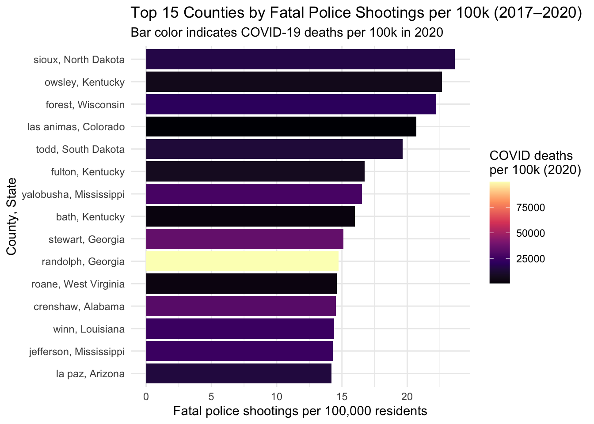
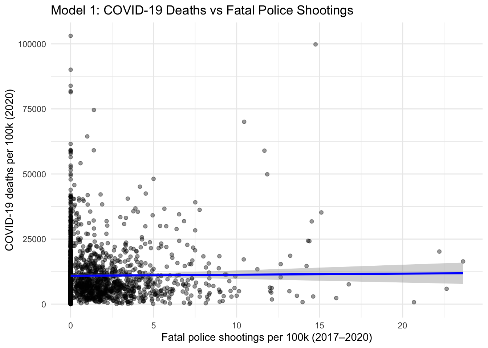
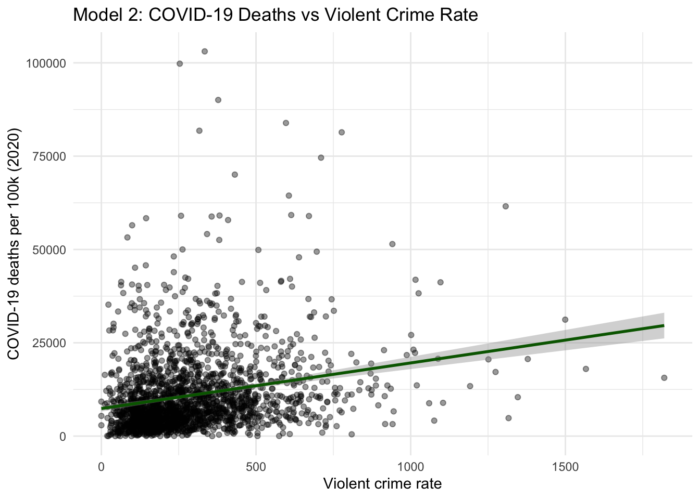
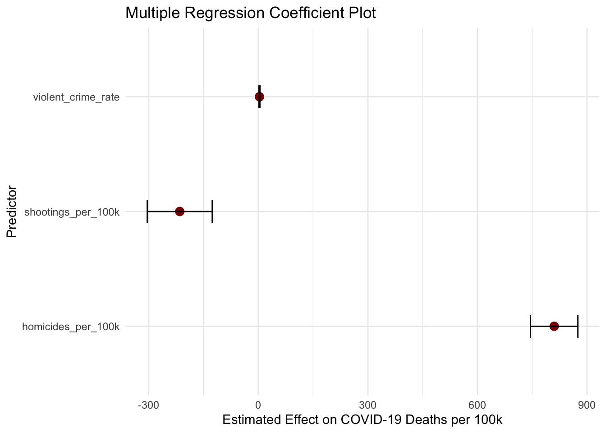

Violence and Covid
2025-11-26
library(tidyverse)
library(janitor)##
## Attaching package: 'janitor'## The following objects are masked from 'package:stats':
##
## chisq.test, fisher.testlibrary(lubridate)
library(tidyr)
library(broom)
library(ggplot2)covid_demo_final_df <- readRDS("covid_demo_final_df.rds")#Covid+Homicide at County-year level
covid_homicide_by_year=
covid_demo_final_df |>
select(
state, county, fips, deaths_homicides,
starts_with("total_cases_"),
starts_with("total_deaths_")) |>
pivot_longer(
cols = starts_with("total_"),
names_to = "name",
values_to = "value"
) |>
separate_wider_delim(
name,
delim = "_",
names = c("total", "measure", "year")
) |>
mutate(
measure = case_when(
measure == "cases" ~ "covid_cases",
measure == "deaths" ~ "covid_deaths",
TRUE ~ measure
),
year = as.integer(year)
) |>
pivot_wider(
names_from = measure,
values_from = value
) |>
filter(year %in% 2020:2023) |>
drop_na(covid_cases, covid_deaths, deaths_homicides)state_lookup=
tibble(
state= state.name,
state_abbr = state.abb)
covid_homicide_by_year=
covid_homicide_by_year |>
left_join(state_lookup, by = "state")state_year_summary=
covid_homicide_by_year |>
group_by(state_abbr, year) |>
summarise(
total_covid_deaths = sum(covid_deaths, na.rm = TRUE),
total_covid_cases = sum(covid_cases, na.rm = TRUE),
total_homicides = sum(deaths_homicides, na.rm = TRUE),
.groups = "drop")shootings_long=
covid_demo_final_df |>
select(
county, state, fips,
population_2019,
health_violent_crime_rate,
deaths_homicides,
matches("fatal_police_shootings_total_\\d{4}$")
) |>
pivot_longer(
cols = matches("fatal_police_shootings_total_\\d{4}$"),
names_to = "year",
values_to = "fatal_shootings"
) |>
mutate(
year = str_extract(year, "\\d{4}"),
year = as.integer(year)
) |>
filter(year %in% 2017:2020)
shootings_summary=
shootings_long |>
group_by(county, state, fips) |>
summarise(
total_shootings_2017_2020 = sum(fatal_shootings, na.rm = TRUE),
population_2019 = first(population_2019),
violent_crime_rate = first(health_violent_crime_rate),
deaths_homicides = first(deaths_homicides),
.groups = "drop") |>
mutate(
shootings_per_100k = (total_shootings_2017_2020 / population_2019) * 1e5,
homicides_per_100k = (deaths_homicides / population_2019) * 1e5)#Joining Fatal Shootings to Covid 2020
covid_2020_by_county=
covid_homicide_by_year |>
filter(year == 2020) |>
select(
state, county, fips,
covid_cases_2020 = covid_cases,
covid_deaths_2020 = covid_deaths)
covid_shootings_2020=
shootings_summary |>
left_join(
covid_2020_by_county,
by = c("state", "county", "fips")
) |>
mutate(
covid_cases_per_100k_2020 = (covid_cases_2020 / population_2019) * 1e5,
covid_deaths_per_100k_2020 = (covid_deaths_2020 / population_2019) * 1e5
)
saveRDS(covid_shootings_2020, "covid_shootings_2020.rds")Visualizations
#Top 15 Counties Plot
top15_shootings_covid=
covid_shootings_2020 |>
filter(
!is.na(shootings_per_100k),
!is.na(covid_deaths_per_100k_2020),
total_shootings_2017_2020 > 0
) |>
slice_max(shootings_per_100k, n = 15)
ggplot(
top15_shootings_covid,
aes(
x = reorder(paste0(county, ", ", state), shootings_per_100k),
y = shootings_per_100k,
fill = covid_deaths_per_100k_2020
)
) +
geom_col() +
coord_flip() +
scale_fill_viridis_c(option = "magma") +
labs(
title = "Top 15 Counties by Fatal Police Shootings per 100k (2017–2020)",
subtitle = "Bar color indicates COVID-19 deaths per 100k in 2020",
x = "County, State",
y = "Fatal police shootings per 100,000 residents",
fill = "COVID deaths\nper 100k (2020)"
) +
theme_minimal()
This plot highlights the 15 counties with the highest fatal police shooting rates between 2017 and 2020. The bar height shows shootings per 100,000 residents, and the fill color shows COVID-19 deaths per 100,000 in 2020. This lets me visually check whether places with high exposure to police violence also experienced high COVID mortality.ggplot(
covid_shootings_2020 |>
drop_na(shootings_per_100k, covid_deaths_per_100k_2020),
aes(x = shootings_per_100k, y = covid_deaths_per_100k_2020)) +
geom_point(alpha = 0.4) +
geom_smooth(method = "lm", se = TRUE, color = "black") +
labs(
title = "Relationship Between Fatal Police Shootings and COVID-19 Mortality (2020)",
x = "Fatal police shootings per 100,000 (2017–2020)",
y = "COVID-19 deaths per 100,000 (2020)"
) +
theme_minimal()## `geom_smooth()` using formula = 'y ~ x' This scatterplot illustrates the relationship between fatal police
shootings per 100,000 residents (summed from 2017 to 2020) and COVID-19
deaths per 100,000 in 2020 across U.S. counties. The points represent
individual counties, and the fitted linear trend line shows that there
is no strong association between fatal police shootings and COVID-19
mortality. Most counties cluster near zero fatal shootings, and the
regression line is nearly flat, suggesting that the level of police
violence in a county did not meaningfully predict COVID-19 death
rates.
This scatterplot illustrates the relationship between fatal police
shootings per 100,000 residents (summed from 2017 to 2020) and COVID-19
deaths per 100,000 in 2020 across U.S. counties. The points represent
individual counties, and the fitted linear trend line shows that there
is no strong association between fatal police shootings and COVID-19
mortality. Most counties cluster near zero fatal shootings, and the
regression line is nearly flat, suggesting that the level of police
violence in a county did not meaningfully predict COVID-19 death
rates.
#Regression Models
analysis_df=
covid_shootings_2020 |>
select(
shootings_per_100k,
homicides_per_100k,
violent_crime_rate,
covid_deaths_per_100k_2020,
covid_cases_per_100k_2020) |>
drop_na()
# 1) Crude regression: fatal police shootings and COVID deaths
model1=
lm(
covid_deaths_per_100k_2020 ~ shootings_per_100k,
data = analysis_df)
summary(model1)##
## Call:
## lm(formula = covid_deaths_per_100k_2020 ~ shootings_per_100k,
## data = analysis_df)
##
## Residuals:
## Min 1Q Median 3Q Max
## -11029 -6579 -3157 3163 92186
##
## Coefficients:
## Estimate Std. Error t value Pr(>|t|)
## (Intercept) 10888.78 268.89 40.495 <2e-16 ***
## shootings_per_100k 41.62 93.26 0.446 0.655
## ---
## Signif. codes: 0 '***' 0.001 '**' 0.01 '*' 0.05 '.' 0.1 ' ' 1
##
## Residual standard error: 10570 on 2063 degrees of freedom
## Multiple R-squared: 9.652e-05, Adjusted R-squared: -0.0003882
## F-statistic: 0.1991 on 1 and 2063 DF, p-value: 0.6555# 2) Crude regression: violent crime rate and COVID deaths
model2=
lm(
covid_deaths_per_100k_2020 ~ violent_crime_rate,
data = analysis_df)
summary(model2)##
## Call:
## lm(formula = covid_deaths_per_100k_2020 ~ violent_crime_rate,
## data = analysis_df)
##
## Residuals:
## Min 1Q Median 3Q Max
## -18647 -6120 -2942 2614 91609
##
## Coefficients:
## Estimate Std. Error t value Pr(>|t|)
## (Intercept) 7381.187 401.867 18.37 <2e-16 ***
## violent_crime_rate 12.224 1.138 10.74 <2e-16 ***
## ---
## Signif. codes: 0 '***' 0.001 '**' 0.01 '*' 0.05 '.' 0.1 ' ' 1
##
## Residual standard error: 10290 on 2063 degrees of freedom
## Multiple R-squared: 0.05299, Adjusted R-squared: 0.05253
## F-statistic: 115.4 on 1 and 2063 DF, p-value: < 2.2e-16# 3) Multiple regression:
model3=
lm(
covid_deaths_per_100k_2020 ~ shootings_per_100k +
violent_crime_rate +
homicides_per_100k,
data = analysis_df)
summary(model3)##
## Call:
## lm(formula = covid_deaths_per_100k_2020 ~ shootings_per_100k +
## violent_crime_rate + homicides_per_100k, data = analysis_df)
##
## Residuals:
## Min 1Q Median 3Q Max
## -24912 -5737 -2392 2583 87396
##
## Coefficients:
## Estimate Std. Error t value Pr(>|t|)
## (Intercept) 6191.972 412.236 15.020 <2e-16 ***
## shootings_per_100k -214.984 88.949 -2.417 0.0157 *
## violent_crime_rate 3.261 1.317 2.475 0.0134 *
## homicides_per_100k 810.014 64.914 12.478 <2e-16 ***
## ---
## Signif. codes: 0 '***' 0.001 '**' 0.01 '*' 0.05 '.' 0.1 ' ' 1
##
## Residual standard error: 9922 on 2061 degrees of freedom
## Multiple R-squared: 0.1196, Adjusted R-squared: 0.1183
## F-statistic: 93.34 on 3 and 2061 DF, p-value: < 2.2e-16# Visualization for Model 1
ggplot(
analysis_df,
aes(x = shootings_per_100k, y = covid_deaths_per_100k_2020)
) +
geom_point(alpha = 0.4) +
geom_smooth(method = "lm", se = TRUE, color = "blue") +
labs(
title = "Model 1: COVID-19 Deaths vs Fatal Police Shootings",
x = "Fatal police shootings per 100k (2017–2020)",
y = "COVID-19 deaths per 100k (2020)"
) +
theme_minimal()## `geom_smooth()` using formula = 'y ~ x'
# Visualization for Model 2
ggplot(
analysis_df,
aes(x = violent_crime_rate, y = covid_deaths_per_100k_2020)
) +
geom_point(alpha = 0.4) +
geom_smooth(method = "lm", se = TRUE, color = "darkgreen") +
labs(
title = "Model 2: COVID-19 Deaths vs Violent Crime Rate",
x = "Violent crime rate",
y = "COVID-19 deaths per 100k (2020)"
) +
theme_minimal()## `geom_smooth()` using formula = 'y ~ x'
#Visualization for Model 3
coef_df= tidy(model3)
coef_df=
coef_df |> filter(term != "(Intercept)")
# Plot coefficients
ggplot(coef_df, aes(x = term, y = estimate)) +
geom_point(size = 3, color = "darkred") +
geom_errorbar(aes(ymin = estimate - std.error,
ymax = estimate + std.error),
width = 0.2, color = "black") +
coord_flip() +
labs(
title = "Multiple Regression Coefficient Plot",
x = "Predictor",
y = "Estimated Effect on COVID-19 Deaths per 100k"
) +
theme_minimal()
model 1: This scatterplot explores whether counties with more fatal police shootings also experienced higher COVID-19 mortality in 2020. Most counties have zero or very few fatal police shootings per 100k, which creates heavy clustering on the left side of the graph. The regression line is flat, indicating little to no linear relationship between fatal police shootings and COVID-19 death rates. While these forms of structural violence may be connected through deeper social factors, this crude model does not show a strong direct association.
model 2: This plot examines whether violent crime rates are associated with COVID-19 mortality at the county level. Here, the regression line slopes upward, suggesting that counties with higher violent crime rates tend to experience higher COVID-19 deaths per 100k. Although the relationship is still noisy, the positive trend indicates that broader community violence may be linked with higher pandemic vulnerability.
model 3: In multiple regression, homicide rates and violent crime were strong predictors of COVID-19 mortality, while fatal police shootings were not. This suggests that structural violence and long-term community disadvantage, rather than isolated rare police encounters, were more strongly linked to COVID-19 vulnerability.